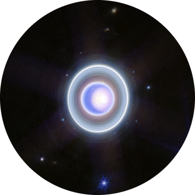
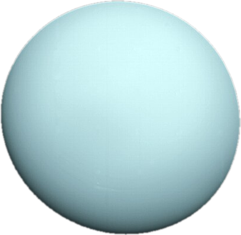
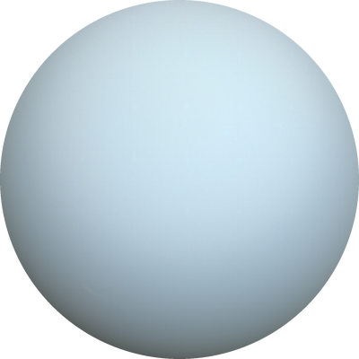

Uranus
Uranus is the seventh planet from the Sun. It is an ice giant with a pale blue-green color, and it spins on its side.



Facts about Uranus
- Diameter: about 50,724 km
- Distance from the Sun: about 2.9 billion km
- A day lasts about 17 hours and a year lasts 84 Earth years
- It is tilted about 98 degrees, so it rolls around the Sun on its side
- It has the coldest atmosphere of any planet, about -224 °C
- William Herschel discovered it in 1781, and it has at least 27 moons